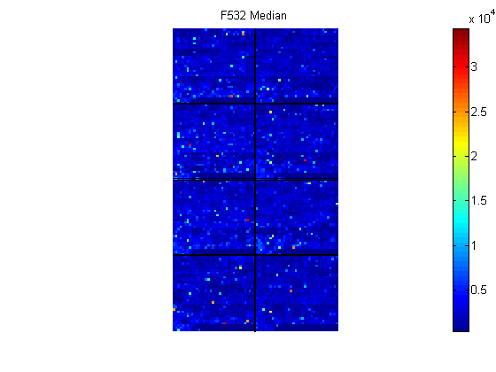
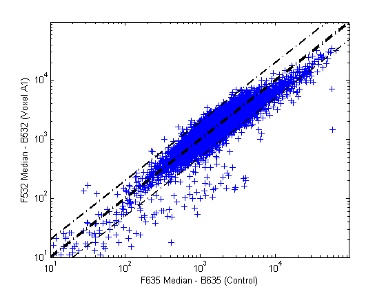
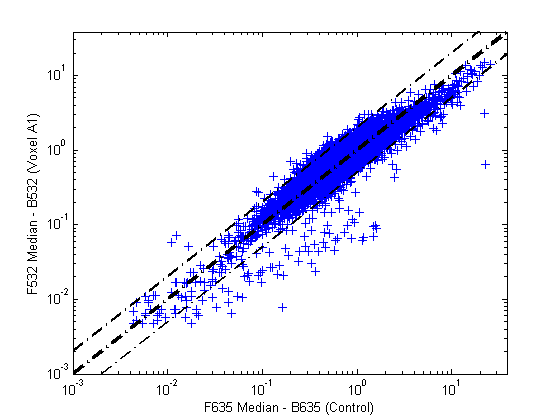

This example looks at various ways to visualize microarray data. The example uses microarray data from a study of gene expression in mouse brains: Brown, V.M., Ossadtchi, A., Khan, A.H., Yee, S., Lacan, G., Melega, W.P., Cherry, S.R., Leahy, R.M., Smith, D.J., "Multiplex three dimensional brain gene expression mapping in a mouse model of Parkinson's disease". Genome Research 12(6): 868-884 (2002).
The microarray data used in the paper are available in a web supplement to the paper:
web('http://www.pharmacology.ucla.edu/smithlab/genome_multiplex/')
The data are also available on the Gene Expression Omnibus website: http://www.ncbi.nlm.nih.gov/geo/query/acc.cgi?acc=GSE30
The GenePix GPR format file mouse_a1pd.gpr contains the data for one of the microarrays used in the study. This is data from voxel A1 of the brain of a mouse in which a pharmacological model of Parkinson's disease (PD) was induced using methamphetamine. The voxel sample was labeled with Cy3 (green) and the control, RNA from a total (not voxelated) normal mouse brain, was labeled with Cy5.
GPR format files provide a large amount of information about the array including the mean, median and standard deviation of the foreground and background intensities of each spot at the 635nm wavelength (the red, Cy5 channel) and the 532nm wavelength (the green, Cy3 channel).
The command gprread reads the data from the file into a structure.
pd = gprread('mouse_a1pd.gpr')
pd =
Header: [1x1 struct]
Data: [9504x38 double]
Blocks: [9504x1 double]
Columns: [9504x1 double]
Rows: [9504x1 double]
Names: {9504x1 cell}
IDs: {9504x1 cell}
ColumnNames: {38x1 cell}
Indices: [132x72 double]
Shape: [1x1 struct]
You can access the fields of a structure using StructureName.Fieldname . For example the ColumnNames field of structure pd can be accessed using pd.ColumnNames .
pd.ColumnNames
ans =
'X'
'Y'
'Dia.'
'F635 Median'
'F635 Mean'
'F635 SD'
'B635 Median'
'B635 Mean'
'B635 SD'
'% > B635+1SD'
'% > B635+2SD'
'F635 % Sat.'
'F532 Median'
'F532 Mean'
'F532 SD'
'B532 Median'
'B532 Mean'
'B532 SD'
'% > B532+1SD'
'% > B532+2SD'
'F532 % Sat.'
'Ratio of Medians'
'Ratio of Means'
'Median of Ratios'
'Mean of Ratios'
'Ratios SD'
'Rgn Ratio'
'Rgn R²'
'F Pixels'
'B Pixels'
'Sum of Medians'
'Sum of Means'
'Log Ratio'
'F635 Median - B635'
'F532 Median - B532'
'F635 Mean - B635'
'F532 Mean - B532'
'Flags'
The first twenty gene names can be accessed using pd.Names(1:20).
pd.Names(1:20)
ans =
'AA467053'
'AA388323'
'AA387625'
'AA474342'
'Myo1b'
'AA473123'
'AA387579'
'AA387314'
'AA467571'
''
'Spop'
'AA547022'
'AI508784'
'AA413555'
'AA414733'
''
'Snta1'
'AI414419'
'W14393'
'W10596'
The maimage command can take the microarray data structure and create a pseudocolor image of the data arranged in the same order as the spots on the array, in other words, a spatial plot of the microarray. The "F635 Median" field shows the median pixel values for the foreground of the red (Cy5) channel.
figure
maimage(pd,'F635 Median')

The "F532 Median" field corresponds to the foreground of the green (Cy3) channel.
figure
maimage(pd,'F532 Median')
"B635 Median" shows the median values for the background of the red channel. Notice the very high background levels down the right side of the array.
figure
maimage(pd,'B635 Median')
"B532 Median" shows the median values for the background of the green channel.
figure
maimage(pd,'B532 Median')
The first array you looked at was for the Parkinson's disease model mouse. Now read in the data for the same brain voxel but for the untreated control mouse. In this case, the voxel sample was labeled with Cy3 and the control, total brain (not voxelated), was labeled with Cy5.
wt = gprread('mouse_a1wt.gpr')
wt =
Header: [1x1 struct]
Data: [9504x38 double]
Blocks: [9504x1 double]
Columns: [9504x1 double]
Rows: [9504x1 double]
Names: {9504x1 cell}
IDs: {9504x1 cell}
ColumnNames: {38x1 cell}
Indices: [132x72 double]
Shape: [1x1 struct]
Use maimage to show pseudocolor images of the foreground and background. The subplot command can be used to put all the plots onto one figure.
figure subplot(2,2,1); maimage(wt,'F635 Median') subplot(2,2,2); maimage(wt,'F532 Median') subplot(2,2,3); maimage(wt,'B635 Median') subplot(2,2,4); maimage(wt,'B532 Median')
If you look at the scale for the background images, you will notice that the background levels are much higher than those for the PD mouse and there appears to be something non random affecting the background of the Cy3 channel of this slide. Changing the colormap gives can sometimes provide more insight into what is going on in pseudocolor plots. For more control over the color, try the colormapeditor function.
colormap hot
The maimage command is a simple way to quickly create pseudocolor images of microarray data. However if you want more control over plotting, it is easy to create your own plots using the imagesc command.
First find the column number for the field of interest.
b532MedCol = find(strcmp(wt.ColumnNames,'B532 Median'))
b532MedCol =
16
Now extract that column from the Data field.
b532Data = wt.Data(:,b532MedCol);
Use the Indices field to index into the Data.
figure
subplot(1,2,1);
imagesc(b532Data(wt.Indices))
axis image
colorbar
title('B532 Median')
Now bound the intensities of the background plot to give more contrast in the image.
maskedData = b532Data;
maskedData(b532Data<500) = 500;
maskedData(b532Data>2000) = 2000;
subplot(1,2,2);
imagesc(maskedData(wt.Indices))
axis image
colorbar
title('Enhanced B532 Median')
The maboxplot function can be used to look at the distribution of data in each of the blocks.
figure subplot(2,1,1) maboxplot(pd,'F532 Median','title','Parkinson''s Disease Model Mouse') subplot(2,1,2) maboxplot(pd,'B532 Median','title','Parkinson''s Disease Model Mouse') figure subplot(2,1,1) maboxplot(wt,'F532 Median','title','Untreated Mouse') subplot(2,1,2) maboxplot(wt,'B532 Median','title','Untreated Mouse')
From the box plots you can clearly see the spatial effects in the background intensities. Blocks numbers 1,3,5 and 7 are on the left side of the arrays, and numbers 2,4,6 and 8 are on the right side. The data must be normalized to remove this spatial bias.
There are two columns in the microarray data structure labeled "F635 Median - B635" and "F532 Median - B532". These columns are the differences between the median foreground and the median background for the 635 nm channel and 532 nm channel respectively. These give a measure of the actual expression levels, though since the data must first be normalized to remove spatial bias in the background, you should be careful about using these values without further normalization. However, in this example no normalization is performed.
Rather than work with the data in the larger structure, it is often easier to extract the column numbers and then the data into separate variables.
cy5DataCol = find(strcmp(wt.ColumnNames,'F635 Median - B635')) cy3DataCol = find(strcmp(wt.ColumnNames,'F532 Median - B532')) cy5Data = pd.Data(:,cy5DataCol); cy3Data = pd.Data(:,cy3DataCol);
cy5DataCol =
34
cy3DataCol =
35
A simple way to compare the two channels is with a loglog plot. The function maloglog is used to do this. Points that are above the diagonal in this plot correspond to genes that have higher expression levels in the A1 voxel than in the brain as a whole.
figure maloglog(cy5Data,cy3Data) xlabel('F635 Median - B635 (Control)'); ylabel('F532 Median - B532 (Voxel A1)');
Notice that this function gives some warnings about negative and zero elements. This is because some of the values in the 'F635 Median - B635' and 'F532 Median - B532' columns are zero or even less than zero. Spots where this happened might be bad spots or spots that failed to hybridize. Points with positive, but very small, differences between foreground and background should also be considered to be bad spots. These warnings can be disabled using the warning command, though it is good practice to investigate why warnings occur, rather than simply to ignore them, as they may be some systematic reason why they are bad.
warnState = warning; % First save the current warning state % Now turn off the two warnings warning('off','Bioinfo:MaloglogZeroValues'); warning('off','Bioinfo:MaloglogNegativeValues'); figure maloglog(cy5Data,cy3Data) % Create the loglog plot warning(warnState); % Reset the warning state. xlabel('F635 Median - B635 (Control)'); ylabel('F532 Median - B532 (Voxel A1)');
An alternative to simply ignoring or disabling the warnings is to remove the bad spots from the data set. This can be done by finding points where either the red or green channel have values less than or equal to a threshold value, say 10.
threshold = 10; badPoints = (cy5Data <= threshold) | (cy3Data <= threshold);
You can then remove these points and redraw the loglog plot.
cy5Data(badPoints) = []; cy3Data(badPoints) = []; figure maloglog(cy5Data,cy3Data) xlabel('F635 Median - B635 (Control)'); ylabel('F532 Median - B532 (Voxel A1)');
This plot shows the distribution of points but does not give any indication about which genes correspond to which points. That is done by adding labels to the plot. As some of the data points have been removed, the corresponding gene IDs must also be removed from the data set before they can be used. The simplest way to do that is wt.IDs(~badPoints).
figure maloglog(cy5Data,cy3Data,'labels',wt.IDs(~badPoints),'factorlines',2) xlabel('F635 Median - B635 (Control)'); ylabel('F532 Median - B532 (Voxel A1)');
Try using the mouse to click on some of the outlier points. You will see the gene ID associated with the point. Most of the outliers are below the y = x line. In fact most of the points are below this line. Ideally the points should be evenly distributed on either side of this line. The points need to be normalized to make this happen. You can use the mameannorm function to perform global mean normalization.
normcy5 = mameannorm(cy5Data); normcy3 = mameannorm(cy3Data);
If you plot the normalized data you will see that the points are more evenly distributed about the y = x line.
figure maloglog(normcy5,normcy3,'labels',wt.IDs(~badPoints),'factorlines',2) xlabel('F635 Median - B635 (Control)'); ylabel('F532 Median - B532 (Voxel A1)');
The function mairplot is used to create an Intensity vs. Ratio plot for the normalized data. This function works in the same way as maloglog.
figure mairplot(normcy5,normcy3,'labels',wt.IDs(~badPoints),'factorlines',2)
You can click on the points in this plot to see the name of the gene associated with the plot.
GenePix is a registered trademark of Axon Instruments, Inc.